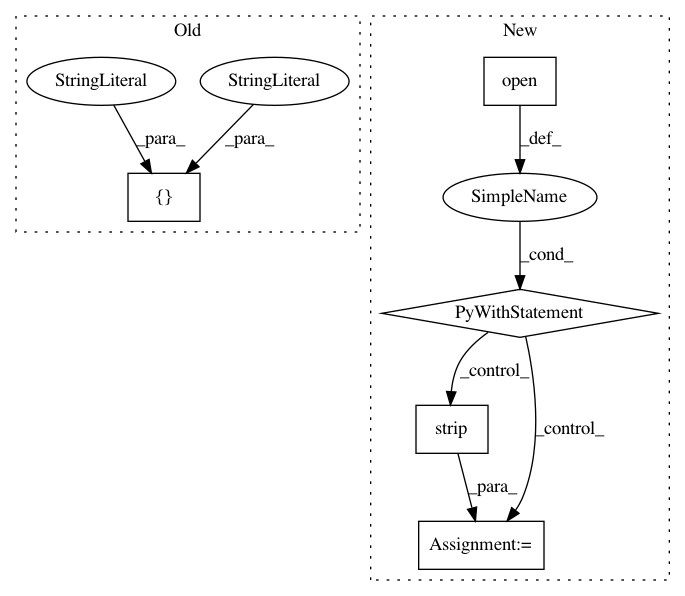

62e5048311cc9495466a154af900d5a7637c2e99,setup.py,,,#,3
Before Change
version="0.2.1",
packages=setuptools.find_packages(),
package_data={"": ["*.txt", "*.md"]},
install_requires=["liac-arff>=2.1.1dev",
"numpy>=1.6.2",
"scipy>=0.13.3",
"xmltodict",
"nose",
"numpydoc",
"requests"],
test_suite="nose.collector",
classifiers=["Intended Audience :: Science/Research",
"Intended Audience :: Developers",
After Change
requirements_file = os.path.join(os.path.dirname(__file__), "requirements.txt")
requirements = []
dependency_links = []
with open(requirements_file) as fh:
for line in fh:
line = line.strip()
if line:
// Make sure the github URLs work here as well
split = line.split("@")
split = split[0]
split = split.split("/")
url = "/".join(split[:-1])
requirement = split[-1]
requirements.append(requirement)
// Add the rest of the URL to the dependency links to allow
// setup.py test to work
if "git+https" in url:
dependency_links.append(line.replace("git+", ""))
setuptools.setup(name="openml",
author="Matthias Feurer",
author_email="feurerm@informatik.uni-freiburg.de",
maintainer="Matthias Feurer",
In pattern: SUPERPATTERN
Frequency: 3
Non-data size: 5
Instances
Project Name: openml/openml-python
Commit Name: 62e5048311cc9495466a154af900d5a7637c2e99
Time: 2016-02-23
Author: feurerm@informatik.uni-freiburg.de
File Name: setup.py
Class Name:
Method Name:
Project Name: mne-tools/mne-python
Commit Name: 415ae684e35a8facbe9e8c5c049b2461de119fe1
Time: 2021-01-04
Author: dan@mccloy.info
File Name: setup.py
Class Name:
Method Name:
Project Name: PIQuIL/QuCumber
Commit Name: ec730c3a3e4bd2fd16b03f07eff058760ed2e390
Time: 2018-09-03
Author: emerali@users.noreply.github.com
File Name: setup.py
Class Name:
Method Name: